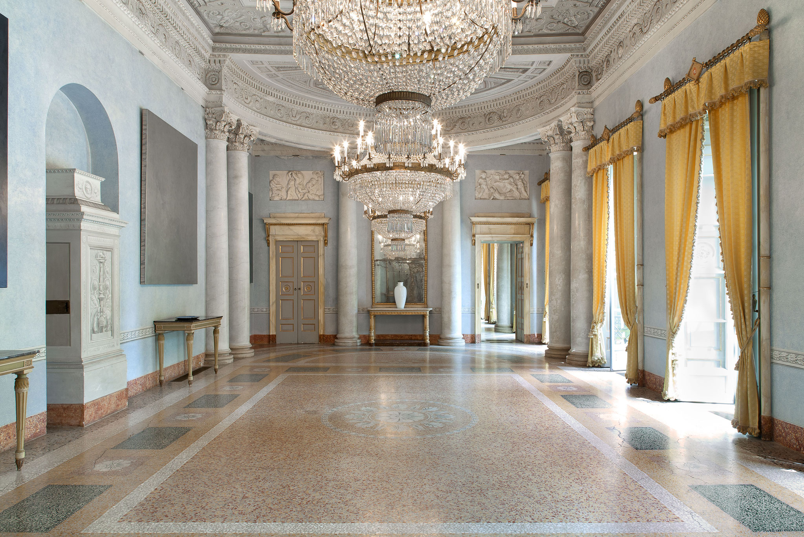
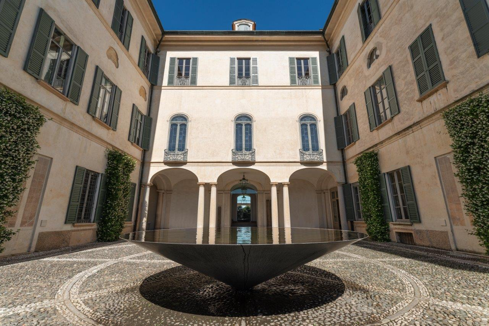

Villa Panza
Una villa del '700 che ospita un'importante collezione d'arte.
Scopri la magia senza tempo di Villa Panza, un gioiello architettonico immerso nel cuore di Varese.
Un esempio straordinario di eleganza e raffinatezza, dove arte e natura si fondono in perfetta armonia. Passeggia tra i sentieri del vasto parco dove ogni angolo invita alla contemplazione e alla tranquillità. Lasciati incantare dalle mostre temporanee, che portano alla ribalta artisti di fama internazionale, e dalla collezione permanente, che ospita installazioni e opere straordinarie di arte contemporanea.
❮



❯